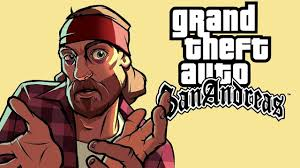

Grand Theft Auto: San Andreas é um jogo eletrônico de ação-aventura desenvolvido pela Rockstar North e publicado pela Rockstar Games. É o quinto título principal da série Grand Theft Auto e foi lançado em outubro de 2004 para PlayStation 2 e em junho de 2005 para Xbox e Microsoft Windows. Versões para plataformas móveis foram lançadas inicialmente em 2013, enquanto que uma versão aprimorada, sob o subtítulo The Definitive Edition, foi lançada em 2021. O jogo se passa no estado ficcional de San Andreas, com a história seguindo Carl "CJ" Johnson em sua luta para lidar com guerras de gangues, confrontos com policiais e as relações com sua família e amigos. O mundo aberto permite que os jogadores naveguem livremente pelas áreas rurais e urbanas de San Andreas.
Depois de viver em Liberty City por cinco anos, Carl Johnson ("CJ") retorna a Los Santos em 1992 para o enterro de sua mãe. Lá, encontra tanto sua família quanto sua antiga gangue, a Grove Street Families, aos pedaços. Ao mesmo tempo que começa a acertar questões antigas com seus companheiros de gangue e luta contra as gangues rivais pelo controle de territórios dentro da cidade, Carl começa a trazer a Grove Street Families de volta ao topo. No entanto, às vésperas das Famílias conseguirem o controle de Los Santos, CJ descobre que seus melhores amigos, Big Smoke e Ryder estão trabalhando em conjunto com o oficial de polícia corrupto, Frank Tenpenny, líder da C.R.A.S.H. (Dublado por Samuel L. Jackson) para uma das gangues rivais, os Ballas. Smoke e Ryder montam uma cilada, para que a polícia prenda o irmão de Carl, Sweet. Tenpenny manda então a polícia prender Sweet e raptar Carl, que é deixado num lugar muito distante, numa área rural bem ao sul de San Andreas, Angel Pine. Ao perceber que Tenpenny é sua única esperança de ficar fora da cadeia e conseguir a liberação de Sweet, Carl se vê obrigado a cumprir as ordens do policial corrupto, que incluem matar e interferir com pessoas envolvidas num processo criminal contra o próprio Tenpenny. Carl envolve com Catalina, prima de Cesar Vialpando, ela namora por aventura, ou seja, gosta de se arriscar assaltando bancos ou lojas, mas depois o larga para ficar com Claude. Carl rapidamente conquista a amizade de novos aliados, entre eles Wu Zi Mu, tambem conhecido como Woozie, líder da San Fierro Triads, The Truth e Cesar Vialpando, que como CJ, foi traído por seus antigos companheiros. Carl e seus novos amigos abrem uma garagem em San Fierro, enquanto esperam por uma oportunidade de retornar para Los Santos. Se envolvem com Jizzy B., dono de uma boate: A cúpula do prazer, e as drogas. Após descobrirem que Jizzy estava se envolvendo com Big Smoke, Carl o mata. Carl descobre aonde encontrar Ryder e T-Bone Mendez, capanga de Jizzy, ele os mata no Pier 69. Carl se envolve com os assuntos de um agente governamental misterioso, Mike Toreno, que deixa a entender que libertará Sweet se Carl o ajudar com suas operações secretas. Paralelamente, Carl ajuda Wu Zi Mu a promover o crescimento de um novo cassino em Las Venturas dominada pelos mafiosos. Eventualmente Carl encontra riqueza e eventualmente retorna a Los Santos. Toreno cumpre sua promessa de libertar Sweet, porém este, para a surpresa do irmão, se recusa a fazer parte do novo estilo de vida milionário de CJ, e insiste em retornar para seu território natal e fazer as GSF renascerem, do que sentar-se confortavelmente sobre os louros de Carl. Tenpenny vai a julgamento por diversos crimes, porém as acusações são arquivadas por falta de provas, já que todas as testemunhas da promotoria estão desaparecidas ou mortas. A libertação de Tenpenny provoca uma revolta entre os cidadãos de Los Santos. Impulsionado pela determinação de Sweet em derrubar o império de Big Smoke, que se tornou o maior traficante da cidade, Carl reconquista o território da gangue e caça os traidores responsáveis pelas tragédias que se abateram sobre as Famílias. Carl eventualmente executa Big Smoke num tiroteio final, escapando de seu palácio em chamas enquanto persegue Tenpenny, que fugira com toda a fortuna de Smoke. Após uma perseguição pelas ruas de Los Santos, Tenpenny perde controle do caminhão de bombeiros que dirigia e cai de uma ponte. Carl, prestes a executá-lo, é impedido por seu irmão. Ambos se afastam, e deixam Tenpenny "morrer num acidente de carro". As cenas finais mostram a confraternização entre a família e os aliados, enquanto Carl se afasta, dizendo que vai "ver o que está acontecendo no quarteirão".
San Andreas está estruturado de maneira similar aos dois jogos anteriores da série Grand Theft Auto. A parte central do jogo consiste de elementos de um jogo de corrida combinado com um third-person shooter, e um ambiente aberto e livre que permite ao jogador interagir e se locomover. A pé, o personagem controlado pelo jogador é capaz de andar, nadar e mergulhar (O primeiro jogo da série na qual isto é possível), escalar e pular, além de usar armas e se envolver em diversos tipos de combates manuais. Os jogadores também podem controlar diversos tipos de veículos, incluindo automóveis, caminhões, barcos, aviões, helicópteros, trens, tanque de guerra, motocicletas e bicicletas. O sistema de jogo aberto e não-linear permite aos jogadores explorar e escolher como desejam jogar o jogo exatamente. Embora as missões da trama sejam necessárias para o progresso através do jogo, e para destravar outras cidades (Todas áreas rurais; San Fierro; deserto e por último Las Venturas) e algum conteúdo do jogo, elas não são obrigatórias, e os jogadores podem completá-las quando quiser, e simplesmente vagar pelos territórios quando não as estiverem cumprindo. No entanto, criar muitos conflitos podem atrair atração indesejada - e potencialmente fatal - das autoridades; quanto mais caos causado, mais intensa a resposta: a polícia cuida das infrações menos graves, como ataque a transeuntes, apontar armas em locais públicos, roubo de carros, alguns assassinatos, enquanto equipes da SWAT, do FBI e até mesmo o exército americano respondem a distúrbios mais graves. O jogador também pode participar de diversas missões opcionais; entre elas estão as tradicionais missões adicionais dos jogos anteriores, como dirigir um táxi e conduzir passageiros pela cidade, apagar incêndios com um carro de bombeiro, dirigir uma ambulância pela cidade e combater o crime, como justiceiro. Entre as novas adições estão missões onde o jogador pode desempenhar a função de ladrão de residência (Arrombamento) ou cafetão, fazer entregas de carga através de trens e caminhões, e frequentar auto escola; moto escola; escola náutica e especialização em aviação - onde ele ainda pode desenvolver sua habilidade em muitos dos veículos existentes no jogo.
A jogabilidade é mostrada em uma perspectiva de terceira pessoa e o mundo pode ser atravessado a pé ou com veículos. Os jogadores controlam Carl Johnson, com muitas missões envolvendo tiro e direção. Ao contrário de seus antecessores, San Andreas introduz elementos de jogabilidade que foram incorporados em jogos posteriores, incluindo elementos de RPG, opções de personalização de roupas e veículos, e uma vasta gama de atividades e minijogos. Seu enredo foi baseado em vários eventos reais que ocorreram em Los Angeles, incluindo a rivalidade entre as gangues de rua Bloods e Crips, a epidemia do tráfico de crack, o Escândalo Rampart do Departamento de Polícia de Los Angeles e também os distúrbios de Los Angeles em 1992. A equipe de desenvolvimento realizou grandes pesquisas com o objetivo de reproduzir as diferentes cidades dentro do jogo.
San Andreas foi aclamado pela crítica ao ser lançado, com elogios sendo direcionados particularmente para sua música, jogabilidade, história e projeto de mundo aberto. Entretanto, ele gerou grandes controvérsias devido sua violência e conteúdo sexual, especialmente após o desbloqueio por parte de alguns jogadores do minijogo de sexo "Hot Coffee". O título, mesmo assim, tornou-se o jogo mais vendido de 2004, com mais de 27,5 milhões de cópias já tendo sido vendidas e permanecendo até hoje como o jogo mais vendido do PlayStation 2 e um dos jogos mais vendidos de todos os tempos. San Andreas é considerado um dos títulos mais importantes da sexta geração de consoles, entrando em várias listas de melhores jogos da história e vencendo vários prêmios, incluindo muitos de Jogo do Ano. O sexto título principal da série, Grand Theft Auto IV, foi lançado em abril de 2008.